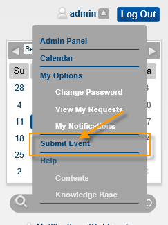
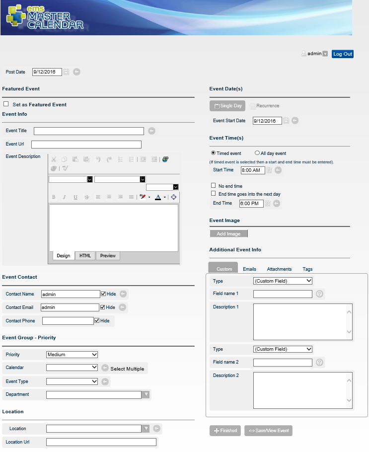

Submit an Event
See Also: Types of Users
- On the Master Calendar main menu, click Submit Event.

- The Submit Event page opens. Enter the event information on the Submit Event page.

See Also:
- General Info fields
- Event Times fields
- Additional Info fields
- Custom Fields, Emails, and Attachments
- Optionally, click Save/View Event for a preview of the event to determine if you are satisfied with the event request.
- After you have entered all the information for the event and are satisfied with the entry, click Finished.
The system processes your submission and returns you to the calendar. If you are a Calendar User, then the event is automatically posted to the selected calendars. If you are a Calendar Requester, then after the Calendar Manager approves or denies your request, the system automatically generates an email to you,
informing you of the Calendar Manager’s decision. If the Calendar Manager approves your request, the event is posted to the selected calendars.
See Also: Types of Master Calendar Users